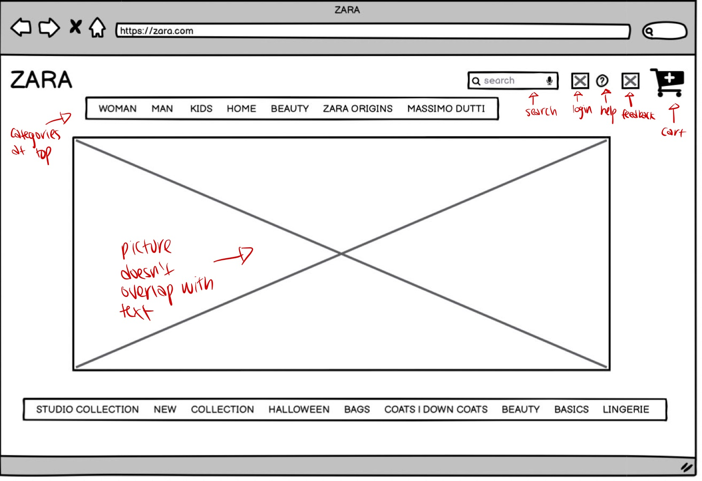
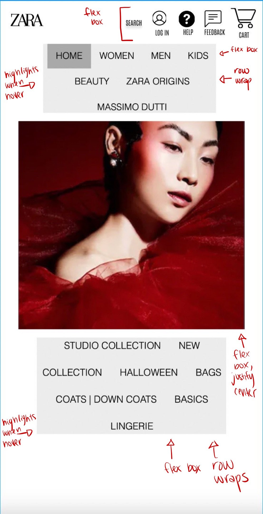
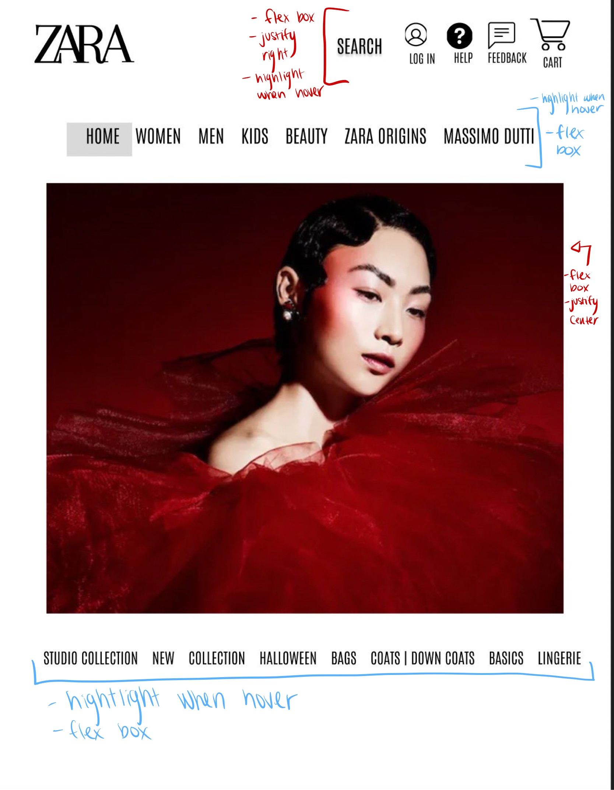
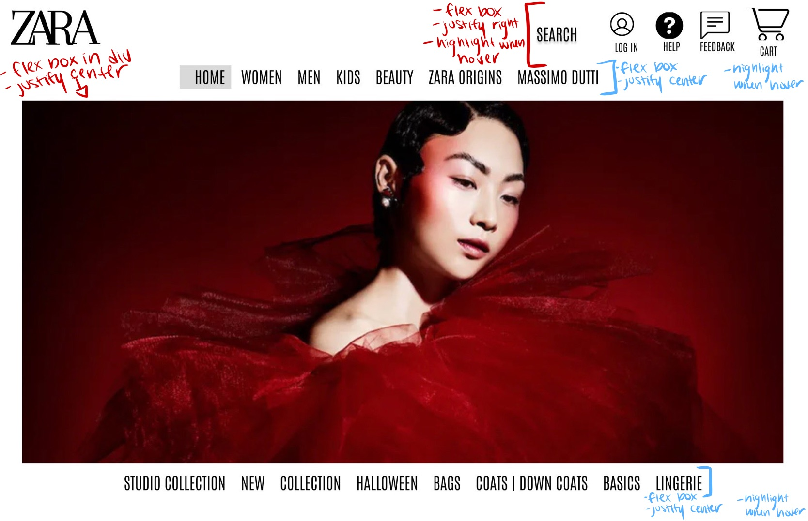

Responsive Redesign
Part 1: Identifying Usability Problems
Picking a Web Page
- zara website
- Why? Whenever my friends and I go on the ZARA website, we always get very confused and end up not wanting to shop online.
Finding Problems
- Usability
- There are contrast errors caused by the images being under the text.
- There is no place for users to give feedback about the website.
- Learnability
- There are catergories at the bottom of the webpage, but the other categories are hidden within the hamburger stack. For the sake of learnability,
I think they should be all displayed on the home page at the top and bottom so users see them and know where to go from the beginning.
- Memorability
-
Adding icons with labels for login/help/cart will help with memorability
because it will have both a visual and word label for the users.
Accessibility
- After using WebAIM WAVE, I found that there were a lot of contrast errors, which I agree with.
I think this is mainly due to the fact that the images appear under the text, which can make things very hard to read.
Another issue was the size of the text. I also agree with this because some of the labels are hard to see sometimes.
Part 2: Visual Redesign
Low-fidelity Wireframing



Visual Design Style Guide
High-Fidelity Prototypes



Part 3: Responsive Redesign